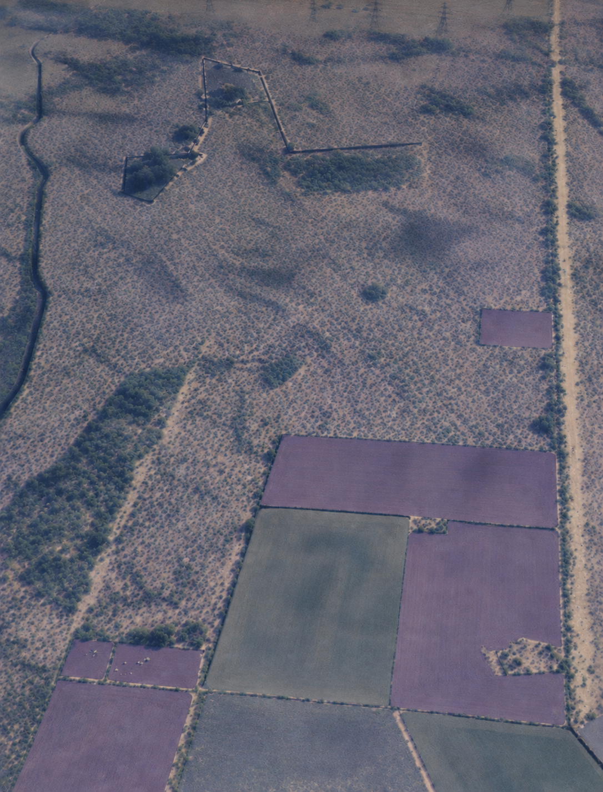
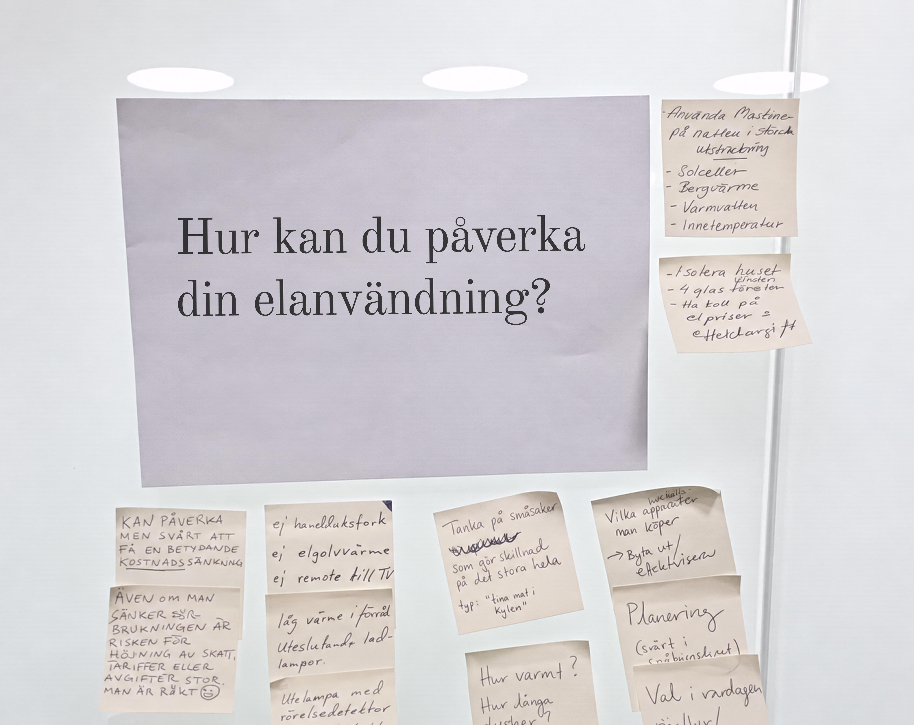

How do people understand energy, cost and climate impact in everyday life?
A research collaboration between KTH, Uppsala University, Ellevio and Bright, funded by the Swedish Energy Agency, exploring how to make household energy use tangible, particularly under power-based tariffs. As designer (2021–22), I worked through Research by Design, using prototypes as the instrument of inquiry rather than the end result.

I facilitated workshops, synthesized the research and developed concepts that translated a complex energy system into everyday cues. Key findings:
Two user groups emerged: Active users, who wanted depth and control, and Ambient users, who wanted relevance over detail. I took the work in two directions, an app for one group and a lamp for the other.
For users who didn't want another screen, I explored a lamp that shows household or grid load through light intensity and color. The question: can energy awareness live in a room without asking for attention?
App testing with 10 participants (5 prosumers, 5 consumers) confirmed the split: prosumers engaged with the data directly, while consumers responded to real-time price against their own usage. The lamp, tested through room-based scenarios, prompted curiosity and reflection rather than immediate action. Most participants read warmer, redder light as higher load, though the color and intensity steps needed a clearer mapping.
I presented the findings to the project partners at Ellevio, and they were included in the final report, contributing to the field's understanding of real-time feedback and energy behavior.